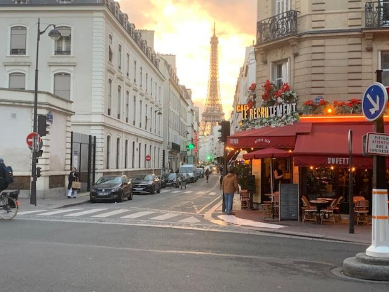
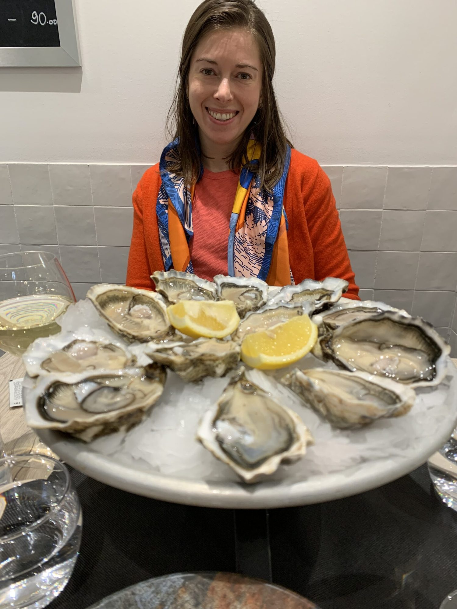
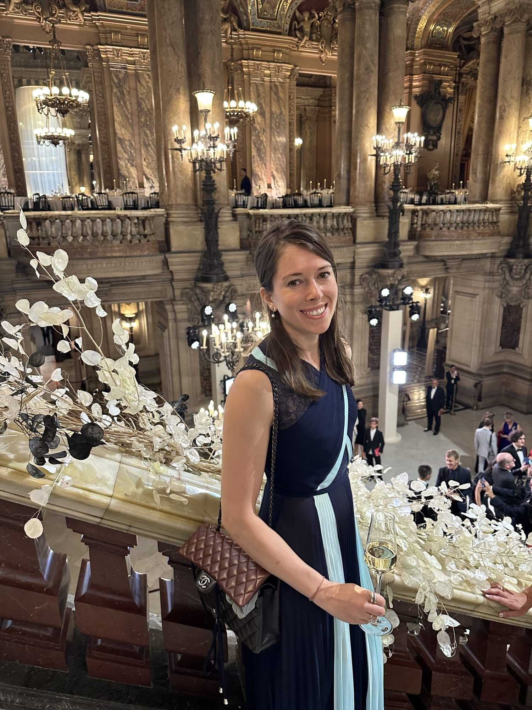
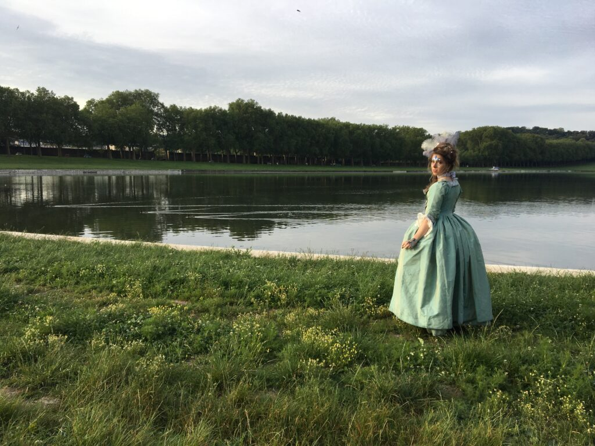

Dr. Rob Murphy is Professor and Executive Director of the Havey Institute for Global Health at Northwestern University; he is a physician at Northwestern Medicine. You may have seen him on WGN-TV morning news in recent years, where he gave daily updates on COVID-19 during the height of the pandemic. While he calls Chicago home, Rob also spends time in Paris, where he has lived on and off for the past 20 years including full time as visiting professor at the Pierre et Marie Curie University. He has met many other Chicagoans who are living and working in the city. Rob will introduce us to some of these Chicagoans in Paris who are embracing a new culture and lifestyle in the City of Lights.
Paris is the most visited city in the world, with approximately 44 million visitors in the last year alone, including 2.4 million Americans. It may seem that everyone you know, including yourself, has visited Paris at some point in their lives. Most people visiting Paris stay for a few days to a week or a little more. There is so much to do in this rich and vibrant city, that it’s impossible to really grasp the Parisian experience in such a short time. It also leads to many of the cliches we hear about Paris and its citizens. If you really want to know Paris, consider working there like Chicago native, Molly Minton, an environmental, social and governance analyst in the French financial sector. First, I have a few facts to share about the Chicago/Paris connection.

There are 2.1 million people living and working within the city of Paris, and a total of 11.2 million in Ile de France which includes the surrounding metropolitan area. Similarly, Chicago, its “Sister City”, has a population of 2.7 million and approximately 9 million living in “Chicagoland”. Paris is the political, economic, and cultural capital of France, more like a combo of Washington, DC, New York and Chicago all rolled into one. One of the biggest differences between Chicago and Paris is size. Paris is geographically small, only 40 square miles, six times smaller than the City of Chicago. That makes Paris one of the most densely populated cities in the world.
It turns out, there are over 15,000 Americans living in Paris, and that doesn’t include “unregistered” persons, like me who stay less than 90 days per year or who don’t bother to register. Not every American living in Paris is actually working, but many of them do, which brings them even closer to the true Parisian experience: renting or buying a flat, getting health insurance, receiving necessary healthcare, working at a job, getting paid, paying French taxes, opening a bank account, interacting with Parisians every single day.

It’s commonly said that Parisians are polite and friendly to their American neighbors, but they will never invite you to their home. I’ve found that to be completely untrue. As a matter of fact, after living there for the past 20 years, I didn’t meet another American for the first 15 years, and that only occurred because I became a member of the American Library in Paris, an incredible institution which houses the largest collection of English literature outside of an Anglophone country. It was at the American Library, that I met my guest today, Molly Minton. Not only was she the first American I met in Paris, but it turns out, we live on the same street, rue de la Comète, a street that is only one block long, making us very close neighbors in the Gros Caillou section of the 7th arrondissement. We sat down to talk about her life, growing up in Chicago and its suburbs and then leaving the U.S. to build a successful career in finance in Paris.
Rob: Your Instagram profile reads, “C’est temps de vivre la vie que tu imagines,” which translates in English to “It’s time to live the life you imagine.” When you tell people about your life today, how do you describe it?
Molly: It depends on the day. Some days it’s a fantasy, some days a comedy, and others, a tragedy. My quote actually came from a card I received from a family friend when I was young which ended up changing my entire perspective on life. Sometimes I look at myself here in Paris and think, I haven’t accomplished anything. Then I look back at who I was in Chicago, and I realize how much I have accomplished and how far I have come. To live, work, make friends, and find the love of my life, it’s been quite the journey.
Rob: Tell me about your childhood. You grew up in the suburbs and attended Lyons Township High School. What was it like growing up in the suburbs, right next to a world-class city like Chicago?

Molly: I was actually born at Northwestern Memorial Hospital when my parents were living in Lincoln Park but they moved out to the suburbs in LaGrange. Although I am a Chicago native, my parents aren’t actually from Chicago. My father is from Louisiana, and was a founding member of the New Orleans Commodity Exchange. His career led him to Chicago when the contract was moved to the Chicago Board of Trade (CBOT). He may not be a Chicago native, but he’s called Chicago home for the last 40 years and thinks there is no place like it. My mother is an artist from Canada. We moved to the suburbs when I was young to live the picket fence dream. While it offered many opportunities, I was always drawn to a life in the city. I particularly loved the Art Institute of Chicago and in my early 20s, I was part of the Lyric Opera Young Professionals (LYP).
Rob: How did foundational experiences, such as interning for two Chicago brokerage firms during your undergrad years and later the LYP, impact you?
Molly: They taught me the value of hard work. I learned what a global center Chicago is. We take for granted as Chicagoans that the Chicago Mercantile Exchange (CME) and the former CBOT were located in Chicago and that Chicago is an epicenter for global trade. This opened my eyes to the global nature of financial markets and to all of the opportunities that extend beyond Chicago. The Lyric Opera, the Art Institute, the Chicago Symphony and the other great Chicago cultural institutions gave me a solid foundation for understanding the importance of culture and art in terms of enriched relationships and a better understanding of both myself and the world.
Rob: Where did you do your university training?
Molly: I started at the University of St. Andrews in Scotland. I knew from a young age that I wanted to experience something different. I have to thank my parents for supporting me in this decision. My father worked on ocean-going vessels as a deckhand in his youth and my mother spent a year after high school in Paris as an au pair, an experience which has inspired a novel she’s been working on. They both supported the idea that experience in a foreign culture enhances young people’s understanding of themselves and of the world.

Rob: Was there something about your childhood or your family that made expat life appealing?
Molly: Both my parents were, in a way, expats in Chicago who set down their own firm roots and foundations. I had that in me from the beginning, so maybe it’s genetic. My extended family across many generations has worked and traveled abroad so maybe its genetic.
Rob: I understand that your grandfather, William Perehudoff, was quite an artist, a very well-known abstract painter.
Molly: Yes, and my grandmother, Dorothy Knowles was also a well-respected Canadian artist. Both my grandparents were recipients of the highest awards in Canada including the Order of Canada, amongst other honors. My grandmother also received the Queen Elizabeth II Platinum Jubilee Medal. There is a Paris connection here too. My grandmother studied at Goldsmiths Art School in London. At the time, my grandfather was in Paris. A friend said, “You better go get her and marry her or I will,” so he went to London and whisked her away and they eloped in Paris!
Rob: You have three Masters degrees, all from European universities. Tell me about your time studying outside the U. S. and how did that lead you to live and work full time in Paris?
Molly: I was originally looking at schools in the US and Canada, but I couldn’t shake the desire to go abroad. While educational systems outside the US are a great way of getting into the foreign job market, I also did it because I wanted to learn from people who were not like me. My first degree was from St. Andrews in Scotland. After a brief stint of working in New York City, I followed up with a Master’s in Sustainability and Social Innovation from HEC Paris, a top ranked European business school. When I finished there, my goal was to go back to the U.K. where all my friends were and where my life seemed to be, but I couldn’t get a visa! This is the primary reason why I ended up doing a third degree in Norway. It was a double degree program in a country I loved and I didn’t have to pay tuition, so I thought, “Why not?”
Rob: I worked in France for 18 months myself as Professeur Associé at Hospital la Pitié-Salpêtrière which was affiliated with the Pierre and Marie Curie University. It’s very different studying and working in France. Can you tell me your favorite parts of it and how you adapted?
Molly: Universities in every single country are vastly different. For example, in the U.K., it’s very self-taught and academic. My friends who got perfect scores were able to incorporate ancient Latin texts into modern-day dialogue on geopolitical conflicts. Fast forward to France, where the French advanced degree system is very particular. It is the high school baccalaureate and early university years that are very challenging, and then it gets easier, focusing more on networking and soft skills. Compared to the American experience, the French baccalaureate and first two years of university called “Prepa” are complete hell. They work the students to the bone and if they do not pass their exams at the end of the second year, they can’t get into a good university or any university at all. If they pass, they don’t really have to push as much anymore, because they’ve already got their “golden ticket”.
As an American, presentation and networking skills are not difficult for me. I give Lyons Township High School a lot of credit for that, but this seems to be a less emphasized skill in France. In Norway, they’re all about numbers. It was so data-focused, and was the most stressful coursework I’ve ever done. They are not always adept at presenting, but they consider complex mathematical questions to be junior-level fundamentals.
Work security in France is very different from what we are used to in the US. If you get a permanent job contract in France, you are very unlikely to be let go. The concept of being laid off doesn’t exist as in the US, which provides a huge sense of comfort and security. Another big difference involves passion about one’s work, a quality much admired in the U.S. It has been implied more than once that I need to appear less excited about my work and less proactive. It’s simply not part of French corporate where “cool” and “blasé” are the norm. In France, people “work to live and not live to work”. This key difference dictates how you are expected to conduct yourself in a work setting. But I love how much they prioritize this work life balance (even in the financial sector).
One of my funniest work stories is from the first year at my company. I had to present at a very high-level committee and needed to get something approved that was going to be a little challenging. I had prepared like an American, which I can thank the Lyons Township Student Council for. I stood up in front of the large conference room full of mostly elderly, white French men, wearing my kick-ass heels, armed with my incredible PowerPoint presentation, and I gave an impassioned speech on the importance of this project. When I finished, this entire group of people stared at me in shock, astounded by my intensely emotive presentation. The next presentation was an unemotional recitation of some text on a power point slide. Absolutely no attempt was made to convince the audience. I was mortified, but I made quite the impression as a new comer and have since learned to adapt and tone things down. Needless to say, people know who I am at the company now.
Rob: The Netflix show, Emily in Paris, happens to be about a young Chicago woman working for a big firm in Paris. What are your thoughts about that show? Is there any really any truth in it? I almost got physically ill watching the first episode.
Molly: I know a lot of French and American people living in Paris hate this show. They say this is a complete lie. I say they’re not in the right position to understand how true this show is. I watched it with my French boyfriend, and he said, “Molly, this is 60 percent of your life.” As a caricature, Emily is over-the-top, but sometimes I feel like a caricature. I’m the smiley American woman who is passionate, wears her heart on her sleeve and wants everyone to get along. There are so many actual instances in this show that reflect actual French culture and society. If you have never lived it, you can’t understand how true it is.
I’ll give you some examples which highlight some of the cultural truisms. In one episode Emily realizes that her entire team has gone off to lunch without her. Actually, at a French office, lunch and coffee breaks are where all of the major decisions are made. Projects rarely move forward in official meetings. The greatest generation of ideas I’ve had with my team, have been during coffee breaks. We come into work around 9:30 a.m. One of the first things we do is have a 20-minute coffee break. When I started my job, I wasn’t invited to team breaks and lunches, similar to Emily’s experience in season 1. In the beginning, I felt very hurt and lonely, as if my coworkers didn’t appreciate having this new American on the team. As it turns out, it wasn’t anything so dramatic. Anyone could just get up and join for coffee, no invite needed! But for lunch, getting invited out to lunch (or dinner) is a sign of trust and respect. French people need time to develop close bonds with others, but once those are formed, they are truly solid.
Another example is when Emily visits a Chateau. She’s comes across as very rude because she asks for a tour. The first time I was invited to visit a chateau, I was shown essentially nothing except the servants’ quarters. It turns out, this is where the current family lives, because it’s more practical and has all of the necessary rooms in close proximity. The original noble owners didn’t need a kitchen so formal bedrooms are on one side and the far more practical staff quarters on the other. I found it strange to be invited to stay at this old, beautiful chateau but with no offer of a tour! Fortunately, I’m hopefully more astute than Emily and didn’t say a word.
One thing that distinguishes us here in the Midwest or America in general, from the French is that in the U.S., we’re very proud of our homes. We love to talk about the interiors we’ve created, and about our gardens and being offered a tour of one’s home is very normal. In France, you do not overstep your invitation and you are unlikely to be shown much of someone’s house the first time if you are invited to someone’s home at all. If you are shown only the living room and you have to use the facilities, good luck! As you get to know this person, seeing their home goes is a real sign that the person is becoming more comfortable around you. In my case, as I became a more frequent guest at the chateau, I was slowly shown one or two additional rooms every time. A sign that this American was becoming accepted into the group.
It’s the same mentality with personal lives. I worked with one colleague for four years before I found out he was married and had a family. In the U.S. within a few minutes being with a new colleague, I’ve learned marital status, how many kids, how many houses they have and where they vacation.
Rob: In Paris, it’s impolite to ask anything personal. The only one thing you can safely ask is “where do you live?” In Paris, it’s all about which of the 20 arrondissements, the formal neighborhoods, that you live. Each one has its unique character, style and political leanings.
One of the biggest challenges for Americans who want to work abroad is mastering a new language. What was that journey like for you, and how did you become proficient in French?
Molly: I’m the world’s worst language student but have finally passed the French exam that has allowed me to apply for citizenship. I did well, but it took a lot of work. It’s not that hard to get a visa here compared to other countries like the U.K. or U.S. because the natural barrier is the language. In France, to get a visa, you first have to get a job and if one doesn’t speak French, it will be very difficult to get hired. I was lucky because my company was expanding internationally. They didn’t have a native English speaker and needed me. Also, I specialize in sustainability and business, a unique and growing field. At the time I was hired there were not many people with similar experience. Knowing the language though is essential. There are Americans here in Paris who speak essentially no French who spend their entire lives living very happily but they will never really integrate and thus understand the true magic of this place.
Rob: You must have at least basic French just to move yourself around the city and to communicate at work. I found that it helps no matter what level of French you speak, to be as polite as the French are to you. For example, you just don’t go into a store and say, in French, “Where are the tomatoes?” That would be very rude. You have to say, “Bonjour, Madame/Monsieur. Where are the tomatoes?” You do this with every clerk, worker, or colleague everywhere. It could be at the little supermarket down the street, getting into a taxi, or you could be at one of the fancy stores. It’s all the same, all the time.
Molly: Also, don’t forget to pause so that they also can say bonjour back to you. You can’t just say, “Bonjour, where are the tomatoes.” Also, don’t ever ask them how they are doing!
Rob: That’s way too personal. You only do that with a real friend.
Describe the draw to this city for you, and what do you think is drawing in all these expats?
Molly: It’s the lifestyle, starting with the two-month vacation, plus all the official holidays including five in May alone. That and the beauty, the culture, and the fact that I can get on a train and go anywhere in Europe. We pay high taxes, and many things are quite expensive; however, we get many benefits: job security, all healthcare, education including subsidized university, childcare. There is a support network here which enables one to have a great work-life balance and to have a good quality of life, as long as one isn’t too passionate about one’s job!
Rob: What have been the most unexpected parts of living here?
Molly: Difficulties making friends, because of language and cultural differences and the loneliness that comes with that. As I said earlier, it depended on the day whether I experienced a fantasy, comedy or tragedy. Paris can be a wonderful city but it can also be a tough place. After six years living here, about 70 percent of my ex-pat friends have left. One has to adjust, but if you do, it’s a stellar place to live! I have been very fortunate to have a great French support network here. I met my partner here after I had started working. I feel so lucky to have found him and even luckier that he had a family who welcomed me with open arms despite my poor French. In tough moments when I feel far away from family in Chicago, it is a huge source of comfort to know I have loved ones here too. It also doesn’t hurt that they live in Provence so “family time” often includes walks through lavender fields and olive groves.
Rob: I think there’s an incredible payoff if you can do it. Tell me about your most iconic Paris experience.
Molly: I originally didn’t believe I was going to stay here very long, thinking, “I’m here for six months and will have a great time.” I did everything on my bucket list including running a full marathon in Bordeaux with 23 wine tastings along the way, in addition to cheese, oysters, and every other French delicacy. The most iconic experience I ever had was attending a costume ball at Versailles that started at 11:00 p.m. in the Orangerie. It wasn’t a historically accurate experience, but one had to wear period costumes. They had fantastical performances and everyone drank champagne and danced the night away. It was wild and the most surreal experience of my life. I was living in a strange Marie Antoinette dream world running through the gardens of Versailles at dawn in full costume. It is in moments like this when I just think, “how is this now my life?”

Rob: Final question. For Chicagoans visiting Paris, what are your top three tips to help them have a great experience?
Molly: The first is to avoid the big parks. People often express disappointment when they discuss visiting places like Champs de Mars or the Tuileries gardens. There are many hidden and much more beautiful gardens that most people don’t realize. Consider Parc Monceau in the 8th arrondissement. It’s beautiful, calm, and just a short walk from the Arc de Triomphe. There is also a very small “secret” garden by the Grand Palais in the 8th arrondissement that no one knows about. It’s a little sanctuary with a waterfall and it is absolutely beautiful!
Second tip would be, thinking along the same lines, avoid the big museums. They are obviously blockbusters, but they’re stressful and often very crowded. Explore the smaller museums. I told a friend who only had a weekend here that if he wanted to see Impressionist work, go to the Musée Marmottan instead of the Musée d’Orsay. Musée Marmottan is a smaller, lovely museum in the 16th arrondissement that has over 300 impressionist and post-impressionist paintings by Claude Monet. In comparison, the Art Institute of Chicago with the largest Monet collection in the U.S., has 46 of his paintings and drawings. If you want to see Monet, head over to the Marmottan.
The third thing is do what you want to do, not what Instagram tells you to do. There are so many different beautiful avenues to explore in Paris, each with its own unique character, that you will have a great time wherever you may wander. But as you mentioned before Rob, each arrondissement is so different. It helps to understand their unique characteristics and histories before going to Paris. Then you can pick the type of Parisian you want to be for your stay! We are obviously steadfast supporters of the 7th, but for example, a very glamourous French colleague of mine is a diehard supporter of the 2nd arrondissement near Palais Royale. I have a whole new appreciation for it, seeing it through her eyes.
Rob: I don’t know what your overall impression is, but after being here for 20 years, I almost feel like I know less. Every time I look somewhere, there’s something else I haven’t seen before. The city and its history are so culturally rich and beautiful.
Molly: It’s truly an incredible city. The longer you live here the more you realize there is more to discover!
Rob: Molly, it was great hearing of your experiences and even greater meeting another Chicagoan who enjoys living and working in Paris as much as I do!